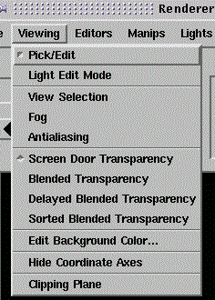

The Viewing menu item provides the following functions (see above)

Same function available via
|
| View Selection can only be selected if an object has been selected: switch to pick mode and click on the object in the viewer area, or click on the name of the object in the Geometry Objects list before you try to use View Selection! |
| Similar functions are available via | |
| CutGeometry (Module) | 1 permanent plane with variable normal and a variable point on the plane (to be supplied as module parameters) |
| Clipping Planes (PreferenceSheet) | 2 switchable clipping planes with fixed normals, distance varied by a wheel |